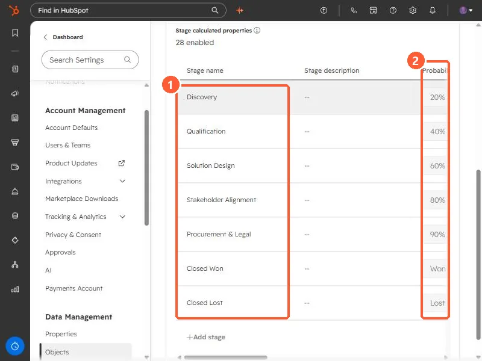
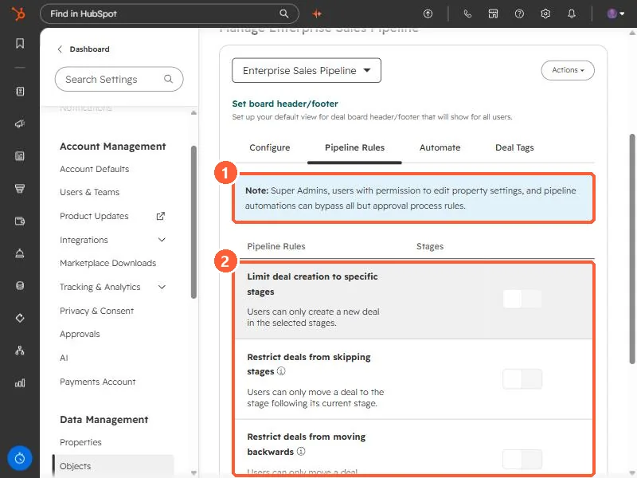
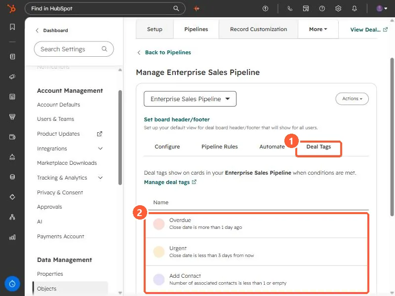
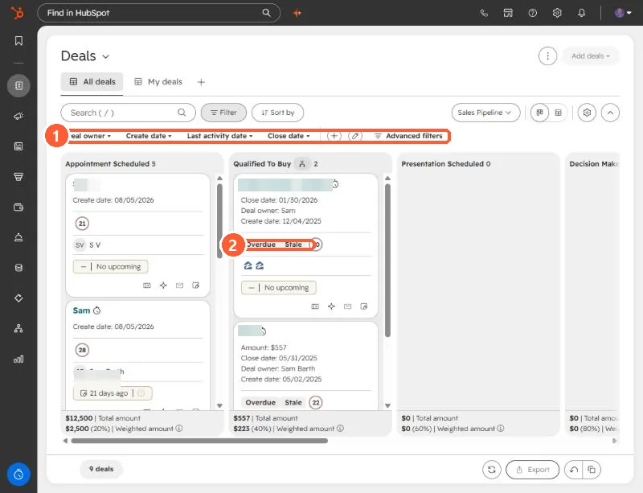
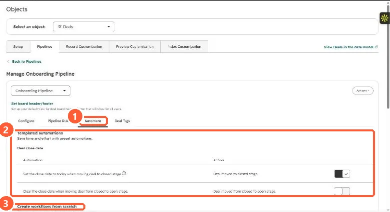
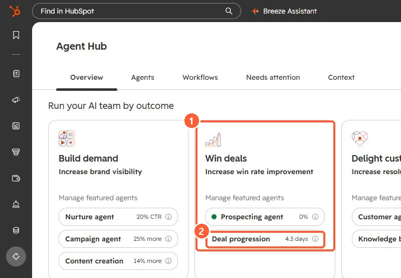

Short answer
Each deal pipeline in Settings, Objects, Deals, Pipelines has four tabs that matter. Configure sets stages and their probability, which drives the weighted amount. Pipeline Rules limit where deals start, block skipping or moving backwards, lock editing, and add approvals (Sales Hub Enterprise). Super Admins, users who can edit property settings, and automations can bypass every rule except approvals. Deal Tags put color labels such as Overdue or Stale on cards. Automate runs actions when a deal reaches a stage; to move deals automatically, use a workflow with an Edit record action.
1. Stages and probability
Open a pipeline. The Configure tab lists each stage (1) and its probability (2):


- The weighted amount in board view is each stage's total amount multiplied by its probability.
- HubSpot's default pipeline uses Appointment scheduled 20%, Qualified to buy 40%, Presentation scheduled 60%, Decision maker bought-in 80%, Contract sent 90%, then Closed won and Closed lost.
- Won and Lost are what make a stage closed. In the pipelines API, my demo portal's closed stages came back as probability
1.0or0.0withisClosed: true; every other stage hadisClosed: false.
If a 60% stage closes far less often than that, the weighted pipeline looks better than reality. Agree what each stage means before trusting the numbers. For forecasting, see the sales forecast.
2. Pipeline rules
The Pipeline Rules tab has the rule switches (2) and a note on who can bypass them (1):


| Rule | Effect |
|---|---|
| Limit deal creation to specific stages | New deals can only start in the stages you pick |
| Restrict deals from skipping stages | Deals move one stage at a time, but can still jump to a closed stage. Also applies to API and integration edits. |
| Restrict deals from moving backwards | Once past the selected stages, a deal cannot move back. Reopened deals can still move. |
| Control deal editing access | Only Super Admins or chosen users and teams can edit deals in certain stages |
| Add approval process for deals | Deals need approval at an approval stage. Sales Hub Enterprise. |
Super Admins, users with permission to edit property settings, and pipeline automations bypass every rule except approvals. Test with a normal user's login before telling the team a rule is enforced.
3. Deal tags
The Deal Tags tab (1) defines color labels that show on deal cards when conditions are met (2):


- My demo pipeline has Overdue (close date more than 1 day ago), Urgent (close date less than 3 days away), Add Contact (no associated contacts), Stale (created more than 90 days ago) and Next Activity Due Soon.
- Each tag has a name, optional description, emoji and color, and filters on the deal or associated records (AND inside a group, OR across groups).
- Starter tags apply to all pipelines; Professional and Enterprise can scope them to one. Creating tags needs Super Admin.
- The tag property works in saved views, reports, workflows and segments, and as a Deal Tags column.
4. Board view and closing stale deals
Customize board cards from the view configuration icon, Board settings, account-wide or for yourself; customizing card appearance needs Professional or Enterprise. To clean up stale deals, filter the board on Last activity date (1); tags like Overdue and Stale flag cards to check (2):


- Open each candidate: last activity date, whether a next activity is scheduled, and the owner.
- Move it to Closed Lost with a Closed lost reason, such as Stale. The Deal loss reasons report in the sales analytics suite counts by that reason.
- For many at once, Ctrl or Cmd-click the cards, then Edit.
- Close rather than delete; deleting removes the record. Tell owners before closing their deals.
5. Move deal stages automatically
The pipeline's Automate tab (1) works from the stage outward: templated close date automations (2) and workflows that run when a deal reaches a stage (3).


To move a deal to a stage when something happens, build a deal workflow:
- Trigger on the property that proves progress, plus Pipeline is the right pipeline, or deals in other pipelines get the wrong stage.
- Action: Edit record, Deal stage.
- Guard against moving deals that are already further along.
Automations bypass pipeline rules except approvals. Moving to a closed stage sets the close date to today unless that automation is off, and probability follows the stage unless someone edited it by hand.
6. Deleting pipelines
You cannot delete a pipeline that still has records or is used in other tools or integrations. Move records out first with a bulk edit from a view. Custom pipeline limits are shared across objects and do not count each object's default pipeline. Ticket stages are called statuses but work the same way, see ticket pipelines.
7. What is changing for 2027
- AI deal progression. In Agent Hub, Deal progression (2) under Win deals (1) reviews all calls and meetings on a deal, updates CRM data and suggests next steps. It needs a Sales or Service seat on Professional or Enterprise, and some features use HubSpot credits.


- Recorded calls feed it. Deal progression works from transcripts, so call recording and the notetaker matter more. See call recording.
Common questions
I turned on Restrict skipping stages, but I can still skip.
Super Admins and users who can edit property settings bypass it. Test as a normal user.
Why can a deal jump straight to Closed Lost?
Moving to a closed stage is allowed even when skipping is restricted.
How is the weighted amount calculated?
Each stage's total amount times that stage's probability.
Why can't I delete a pipeline?
It still has records, or another tool or integration uses it.
Sources
- HubSpot Knowledge Base: Set up and manage object pipelines
- HubSpot Knowledge Base: Set up rules for object pipelines
- HubSpot Knowledge Base: Require approvals for deals
- HubSpot Knowledge Base: Create color-coded object tags
- HubSpot Knowledge Base: Customize the board view
- HubSpot Knowledge Base: Manage records in board view
- HubSpot Knowledge Base: Sales analytics suite
- HubSpot Knowledge Base: Move deals forward with deal progression
- HubSpot Knowledge Base: HubSpot's default deal properties
- HubSpot developer docs: Pipelines API